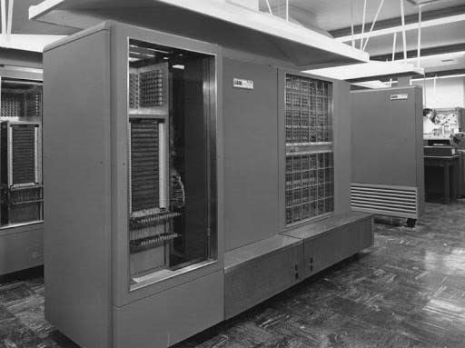
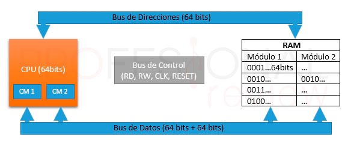
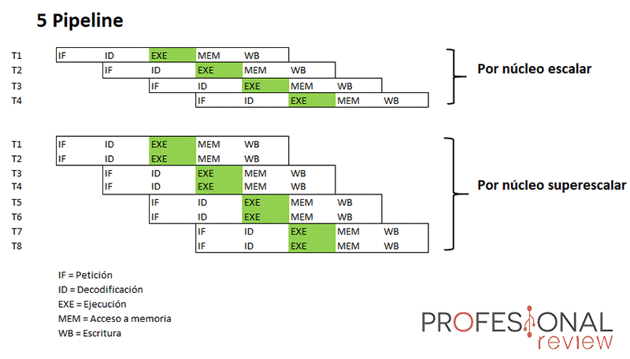

Aspectos Básicos de la computación paralelaUn procesador en paralelo es el método mediante el cual una serie de tareas e instrucciones se ejecutan de forma simultánea. Como cualquier trabajo en paralelo, se trata de dividir el trabajo en trozos más simples, que actualmente solemos llamar hilos, threads o subprocesos. Cada uno de estos subprocesos es ejecutado en uno de los núcleos del procesador de forma simultánea para aminorar el tiempo de espera entre tarea y tarea. Más adelante lo explicaremos con más detalle. Sin darnos cuenta (o igual si), tenemos en nuestra casa procesadores en paralelo casi para cualquier tarea, por ejemplo, nuestros móviles cuentan con procesadores multinúcleo capaces de ejecutar varias tareas, nuestros ordenadores también e incluso los televisores inteligentes ya cuentan con procesadores de este tipo.

Niveles de procesamiento paralelo Paralelización por bit

La paralelización a nivel más bajo es la que se realiza en las cadenas de bits. Toda instrucción está formada por palabras, que en definitiva son estas cadenas de bits que transportan la información. El contar con palabras más largas, permite añadir más contenido a la instrucción, y en consecuencia hacer más trabajo de una sola vez. En la actualidad todos los procesadores trabajan con palabras de 64 bits, mientras que antes permitían solo 32 bits. Esto también hace que la programación de aplicaciones haya evolucionado mucho, ya que actualmente se compila siempre en 64 bits siendo programas mucho más rápidos computacionalmente hablando. Paralelización por instrucción

El siguiente nivel de procesador en paralelo radica en paralelizar instrucciones. En instrucciones sin dependencias entre ellas se puede decir eso de “el orden de los factores no altera el producto”. Las instrucciones se combinan en grupos para ser procesadas de forma paralela en distintas etapas o “pipeline”. El pipeline es la capacidad del procesador de trabajar con barias instrucciones a la vez, cada una de ellas situadas en una etapa distinta. Cuanto nos referimos a etapas son las típicas de la arquitectura RISC: pedir instrucción -> decodificar -> ejecutar -> acceso a memoria -> escritura que estudiamos en asignaturas de computación o informática. Paralelismo de datosEn este nivel lo que se pretende dividir es la entrada de datos de un programa, que trasladado a nivel de procesador consistiría en asignar un subconjunto de datos a cada procesador o núcleo para que ejecuten la misma secuencia de operaciones. Un ejemplo claro de esto es el trabajo con vectores y matrices, algo muy utilizado en los procesadores gráficos en donde en aplican operaciones similares en grandes conjuntos. Paralelismo de tareasEs el caso contrario a lo anterior, ya que en este método, un programa es capaz de entregar tareas al procesador que son totalmente distintas unas de otras para que se realicen en paralelo. Este sería un verdadero programa paralelizado. |